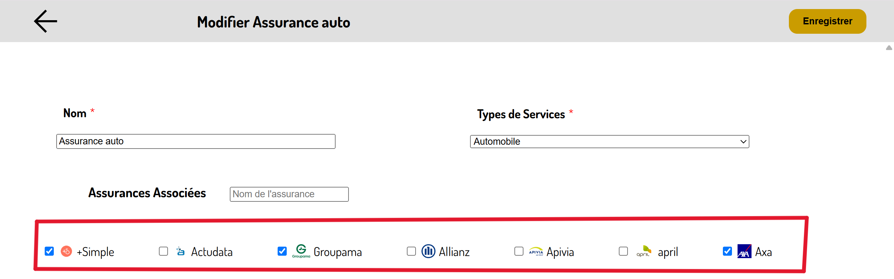

Présentation et évaluation de savoir-faire d'intégration en entreprise
Cette partie permet de présenter et évaluer les savoir-faire d'intégration en entreprise ...
Être force de proposition

Savoir-faire élémentaire : Créer des fonctionnalités pertinentes aux besoins utilisateurs .

Trace 21 : Page de modification de serviceLors de mon stage, il m'est arrivé de proposé des modification voir prendre de petites initiatives. En effet, les différents guides que j'ai pu faire en rapport avce mes travaux (Calendly, application recensant les accès aux assurances) n'étaient pas initialement demandés dans le sujet de stage. Cependant, ces tutoriels facilitant grandement l'utilisation de ces outils .
De plus, certaines fonctionnalités de l'application sont aussi des propositions que j'ai pu faire :
Tout d'abord, la possibilité de mettre des assurances en favori afin de les voir affiché en début de liste car, lorsque j'ai échangé avec les futurs utilisateurs, ceux-ci m'ont dit que chacun avait plus ou moins ses services d'assurance et donc assurance de prédilection .
De la même manière, j'ai jugé utile d'ajouter à l'application la possibilité de réinitialiser son mot de passe si on l'a oublieé. Pour se faire, j'ai donc ajouté une adresse mail obligatoire et unique lors de la création (et donc aussi la modification) d'un utilisateurpour l'application.
Enfin, par soucis de praticité, j'ai pensé agréable de pouvoir modifier les assurances associés à un service depuis le service en question (et pas seulement depuis les assurances, ce qui peut vite devenir rébarbatif lors de l'ajout d'un nouveau service sachant que l'entreprise travaille avec plus de 60 assurances, donc 60 potentiels assurances à modifier une par une). Dans la trace 21, on voit la page de modification du service Assurance auto et encadrée en rouge se trouve la liste de toutes les assurances dont celles qui sont proposent le service sont cochées.